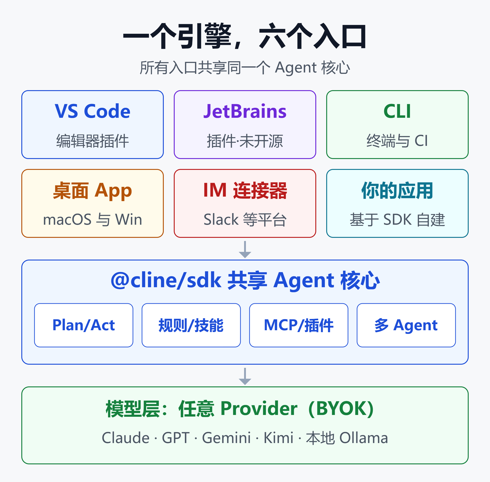
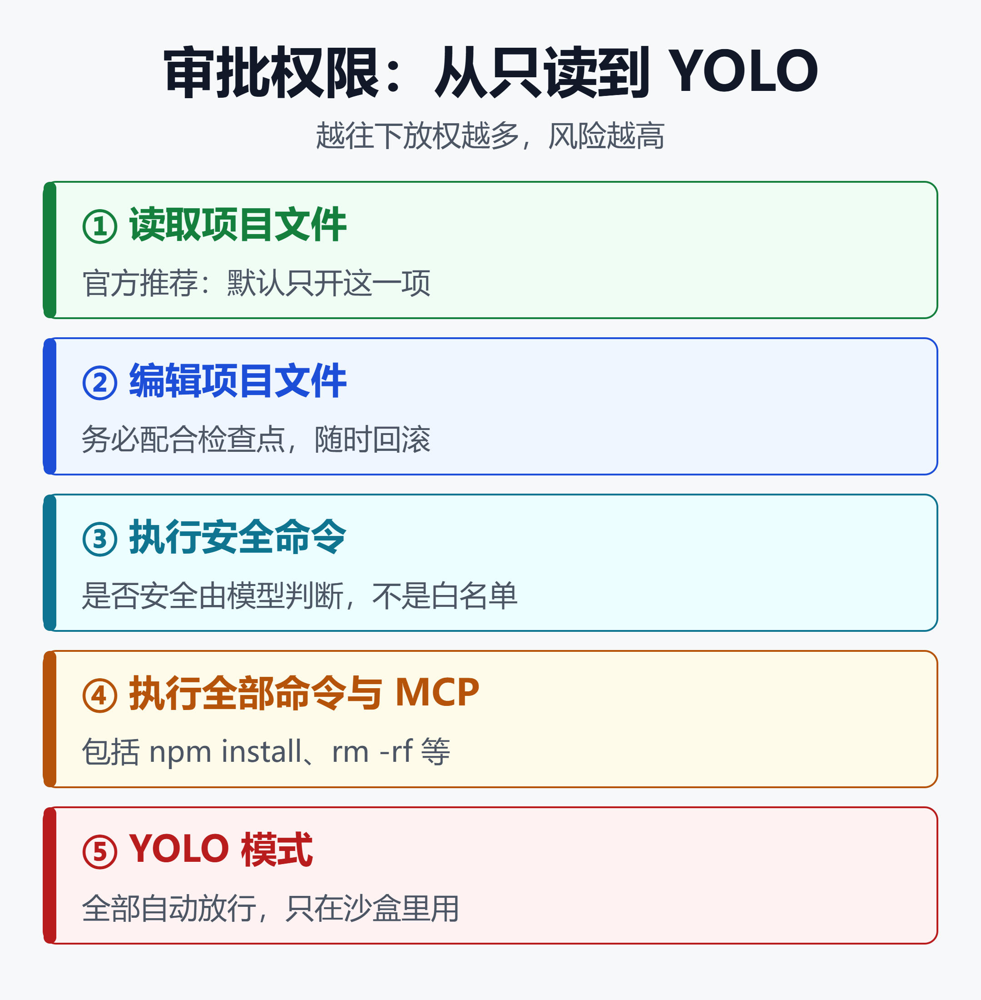

开源编程工具 Cline 上手指南 2026：Plan/Act、自带模型、MCP 与多 Agent 实战
一个不收订阅费的编程 Agent，装了 1100 万次
2025 年 3 月，Cline 的安装量是 100 万。到 2026 年 1 月是 500 万，8 月超过 800 万。现在官网写的是 1100 万+ 安装、69.6k GitHub Stars。
它的商业模式有点反直觉：插件本身免费，Apache 2.0 开源，模型用你自己的 API Key，Cline 不从调用费里抽成。
不靠卖 token 赚钱，它 2025 年却拿到了 3200 万美元融资，A 轮由 Emergence Capital 领投。
下面这份指南偏实操：先讲安装和选模型，再讲 Plan/Act 审批、规则、MCP、多 Agent 团队和无头 CLI。最后聊 2026 年 2 月那次 Clinejection 供应链事件——普通用户能从中学到什么。
Cline 是什么：一个引擎，五种形态
Cline 最早叫 Claude Dev，是一个 VS Code 侧边栏插件。它不做 Tab 补全，而是一个会读代码、改多个文件、跑终端命令、看报错再修的自主 Agent。
2026 年 5 月，Cline 把 Agent 核心抽成了独立的 @cline/sdk，再在它之上重建了所有产品。官方博客的解释很直白：早期 Agent 循环长在插件内部，越做越难维护，也没法复用。

上图的意思很简单：VS Code、JetBrains、CLI、桌面 App、IM 连接器和你自己写的应用，跑的都是同一个 Agent 核心。Plan/Act、规则、MCP、检查点在各端表现一致，底层模型随便换。
目前的形态包括：
- VS Code 插件：最主流的用法，编辑以 diff 呈现，可逐条审批
- JetBrains 插件：IDEA、PyCharm、GoLand 等全家桶可用，这部分未开源
- CLI：交互式终端对话，也能完全无头跑在 CI/CD 里
- 桌面 App：macOS 和 Windows 原生应用，不依赖编辑器
- SDK：
@cline/sdk，拿同一个引擎搭自己的 Agent
第一步：安装，按场景选入口
VS Code 用户
在扩展市场搜索「Cline」安装即可，Open VSX 上也有，所以 Cursor、Windsurf 这类 VS Code 系编辑器同样能装。装完左侧栏会出现 Cline 图标。
终端与 CI 用户
CLI 通过 npm 安装：
npm i -g cline
在 CLI 里按 Tab 切换 Plan / Act 模式，按 Shift+Tab 开关自动审批，会话中途也能换模型。
不用编辑器的人
直接下载桌面 App。它可以在任意文件夹里开 Agent 会话，还能管理模型、插件、MCP 服务器和定时任务。
建议：新手先用 VS Code 插件上手，可视化 diff 加逐条审批最直观。等摸熟了 Agent 的行为模式，再迁到 CLI 做自动化。
第二步：接入模型，BYOK 怎么用才划算
Cline 不绑定任何模型厂商，这是它和 Claude Code、Codex CLI 最大的差别。支持的来源包括：
- Anthropic Claude、OpenAI GPT、Google Gemini
- OpenRouter（200+ 模型）、Vercel AI Gateway
- AWS Bedrock、Azure、GCP Vertex
- Cerebras、Groq 等高速推理服务
- Ollama、LM Studio 本地模型
- 任意 OpenAI 兼容接口（vLLM、自建网关等）
Plan 和 Act 用不同模型
这是最实用的省钱技巧。在设置里打开「Use different models for Plan and Act」，就能给两个模式各配一个模型，切换模式时模型自动跟着切。
| 目标 | Plan 模式 | Act 模式 |
|---|---|---|
| 质量优先 | Claude Opus | Claude Sonnet |
| 成本优先 | 国产开源大模型 | 快速小模型 |
| 速度优先 | Gemini Flash | Cerebras |
思路很简单：规划阶段要的是推理深度，用贵一点的模型，token 消耗却不大；执行阶段调用多、上下文长，交给便宜、快的模型去扛。
开源模型表现怎么样
Cline 在 SDK 发布博客里公布了 Terminal-Bench 2.0 的 pass@1 成绩。用 Claude Opus 4.7，Cline CLI 得分 74.2%，同模型下 Claude Code 是 69.4%。
开源权重模型上，Cline 团队自测对比了 OpenCode：
| 模型 | Cline | OpenCode |
|---|---|---|
| Kimi K2.6 | 55.1% | 37.1% |
| DeepSeek V4 Pro | 53.9% | 51.7% |
| GLM-5.1 | 49.4% | 52.8% |
需要说明：这些都是 Cline 官方自测数据，OpenCode 一方没有公布同口径成绩，只能当参考。
能得出的结论只有一个：国产开源模型接进 Cline 已经可以干活，Kimi 和 DeepSeek 的表现都不差。
成本要自己算清楚
BYOK 是双刃剑。轻度使用时，按调用付费比 20 美元月费便宜得多；但重度用户一天跑几十个长任务，账单可能超过 Cursor。
建议在 Provider 后台设好月度预算上限，前两周每天看一次消耗，再决定常用模型组合。
第三步：Plan/Act 与审批，先想清楚再动手
Plan 模式：只读不写
Plan 模式下，Cline 可以读代码、搜索、和你讨论方案，但不能改文件、不能执行命令。这个限制是故意的，让对话集中在理解和规划上。
适合用 Plan 的场景：
- 接手陌生代码库
- 排查原因不明的 bug
- 影响多个文件的架构调整
- 代码审查和安全分析
Act 模式：带着上下文执行
切到 Act 后，Plan 阶段的对话历史全部保留，Cline 直接按商量好的方案动手。遇到意外复杂度，随时切回 Plan 重新想。
官方的建议很明确：即使能直接用 Act，也推荐先 Plan。规划阶段积累的上下文，正是执行阶段做对决策的前提。复杂任务还可以用 /deep-planning 斜杠命令做更深入的分析。
审批权限：按风险逐级放开

Cline 默认每次改文件、跑命令都要你点确认。打开 Auto Approve，才能按类别批量放行。
上图从上到下风险递增：只读 → 编辑项目文件 → 执行安全命令 → 执行全部命令与 MCP → YOLO 全放行。
几个容易踩的点：
- 「安全命令」不是固定白名单，而是模型自己给每条命令打
requires_approval标记 npm test、git status通常算安全，npm install、rm -rf通常要审批，但这不是保证- 「读取/编辑全部文件」只是扩展到工作区之外，前提是基础开关已开
- YOLO 模式会连 Plan 到 Act 的切换都自动批准，官方原话就是「危险」，只适合一次性沙盒实验
官方推荐的默认配置：只开「读取项目文件」，其他先关着，有明确需要再开。
检查点：出错一键回滚
每次工具调用后，对话里都会出现一个 Checkpoint 标记，带 Compare 和 Restore 两个按钮。Compare 看这一步具体改了什么，Restore 回到这一步之前。
如果你打开了自动编辑，检查点就是你的安全网。
第四步：Rules、Workflows 与 Skills，把团队规范写进去
Rules：每次对话都生效的规则
Rules 是 Markdown 文件，放在项目根目录的 .clinerules/ 或 .cline/rules/ 下，每次对话自动加载。适合写编码规范、技术栈说明、「不要改 /legacy 目录」这类约束。
your-project/
├── .clinerules/
│ ├── coding.md # 编码规范
│ ├── testing.md # 测试要求
│ └── architecture.md # 架构约定
└── src/
一个规则文件的写法示例：
# 编码规范
## 命名
- 变量用 camelCase，类用 PascalCase
- 常量用 UPPER_SNAKE
## 约束
- 不要修改 /legacy 目录下的文件
- 新接口必须附带单元测试
好消息是 Cline 会自动识别其他工具的规则文件：.cursorrules、.windsurfrules 和 AGENTS.md 都能读。从 Cursor 迁过来不用重写规则。
全局规则放在 Documents\Cline\Rules（Windows）或 ~/Documents/Cline/Rules（macOS/Linux）。工作区规则和全局规则冲突时，工作区优先。
Workflows：按需调用的流程脚本
Rules 有个隐性成本：它是系统上下文的一部分，每条消息都要消耗 token。
所以 Cline 官方专门写过一篇《别在需要 Workflow 的时候加 Rule》。Workflows 也是 Markdown 文件，定义一串步骤，只在你调用时才进入上下文。
区分方法：
- 每次都要遵守的约束 → Rules（如命名规范）
- 偶尔执行的固定流程 → Workflows（如发版、生成周报）
- 特定场景才需要的领域知识 → Skills，让模型按需加载
用 /newrule 让 Cline 帮你写规则
发现自己在不同任务里反复说同样的话时，输入 /newrule，Cline 会引导你整理成规则文件，存进 .clinerules/。
第五步：接入 MCP，让 Agent 连上外部系统
MCP（Model Context Protocol）让 Cline 能调用数据库、API、云平台等外部工具。
协议本身的原理，可以参考站内的MCP vs A2A：重塑 AI Agent 生态的两大协议深度解析。
在 VS Code 里配置
点 Cline 面板顶部的 MCP Servers 图标 → Configure 标签 → Configure MCP Servers，会打开 JSON 配置文件。本地 STDIO 服务器这样写：
{
"mcpServers": {
"local-server": {
"command": "node",
"args": ["/path/to/server.js"],
"env": { "API_KEY": "your_api_key" },
"disabled": false,
"autoApprove": []
}
}
}
远程服务器用 url 加 "type": "streamableHttp"。注意：不写 type 会默认走旧版 SSE，想用推荐的 Streamable HTTP 必须显式声明。
在 CLI 里配置
CLI 的配置文件是 ~/.cline/mcp.json，也可以用向导：
cline mcp # 交互式增删改
cline config mcp --json # 非交互列出
MCP 安全四条
- 只装信得过的服务器
- 密钥放环境变量，不要写死在配置里
autoApprove只放只读类的安全工具- 调用前看一眼参数再批准
第六步：多 Agent 团队、定时任务与无头 CLI
这部分是 Cline 2026 年新增的能力，也是它和早期「侧边栏插件」拉开差距的地方。
多 Agent 团队
一个协调者 Agent 把任务拆开，派给专家 Agent，最后合并结果。团队状态会持久化，下次接着干：
# 启动一个团队
cline --team-name auth-sprint \
"Plan and implement user auth with tests"
# 第二天接着做
cline --team-name auth-sprint \
"What's the status? Continue unfinished tasks."
团队数据存在 ~/.cline/data/teams/<团队名>/ 下，包含任务看板、Agent 之间的消息箱和活动日志。
SDK 提供两级协作，按任务规模选：
| 维度 | 子 Agent | 团队 |
|---|---|---|
| 持久化 | 仅限本次会话 | 跨会话保留 |
| 协作方式 | 父子委派 | 共享任务看板 |
| 适合 | 一次性委派 | 多天的大任务 |
官方文档也提醒：团队有额外开销。任务能自然拆成独立子任务、或者要跨好几天，才值得开团队；简单任务一个 Agent 配好工具，通常更高效。
想了解多 Agent 框架的一般设计，可以看CrewAI 深度拆解：5.8 万 Star 背后，Crews 与 Flows 的能力边界和生产代价。
定时 Agent
用 cron 表达式定时跑任务，比如工作日早上 9 点汇总 PR：
cline schedule create "PR summary" \
--cron "0 9 * * MON-FRI" \
--prompt "List all open PRs and review status" \
--workspace /path/to/repo
定时任务重启后依然保留，不依赖终端会话。适合每日 PR 摘要、每周依赖检查、代码健康报告。
无头 CLI 接入 CI/CD
CLI 可以完全无交互运行，支持管道输入和 JSON 输出：
# 跑测试并修复失败
cline "Run tests and fix any failures"
# 审查当前分支的改动
git diff origin/main | cline "Review these changes"
# JSON 输出，交给 jq 处理
cline --json "List all TODO comments" \
| jq -r 'select(.type == "agent_event"
and .event.text) | .event.text'
接入 IM
还能把 Agent 接到 Telegram、Slack、Discord、WhatsApp、Linear 等平台，每个对话线程对应一个 Agent 会话：
cline connect telegram -k $BOT_TOKEN
接入 IM 时一定要配置访问控制，限制谁能和你的 Agent 对话。否则任何能给机器人发消息的人，都能让它在你的机器上干活。
安全：Clinejection 事件给用户的教训
2026 年 2 月，Cline 自己成了 AI Agent 安全的反面教材。整条攻击链是这样的：
- Cline 仓库用一个 AI Agent 自动分诊新 Issue，这个工作流权限配置过宽
- 安全研究员 Adnan Khan 发现，在 Issue 标题里写提示注入，就能让它执行任意命令
- 攻击者借此投毒 CI 构建缓存，在下一次发版时窃取了 npm 发布 token
- 2 月 17 日，恶意的
cline@2.3.0被发到 npm，唯一改动是一个 postinstall 脚本：全局安装 openclaw
这个版本在线约 8 小时，据 StepSecurity 统计被下载了约 4000 次。VS Code 和 JetBrains 插件不受影响。
事后的处置也算快：Cline 发布 2.4.0、废弃 2.3.0、吊销 token，并把 npm 发布改成基于 GitHub Actions 的 OIDC 可信发布。
Endor Labs 评估整体影响较低，因为 openclaw 本身不是恶意软件。
对普通用户，这件事有三条实际教训：
- CLI 保持更新，并检查机器上有没有来路不明的全局 npm 包
- 自动审批要克制：Agent 读到的任何外部文本（Issue、网页、文档）都可能藏着注入指令
- 给 CI 里的 Agent 最小权限：如果你也在用 Cline CLI 做自动化，别给它能碰发布凭证的权限
想看更系统的 Agent 安全与治理思路，可以延伸阅读：
Vibe Coding的隐藏代价：2000个裸奔应用、630万丢失订单、和322%的权限漏洞
Cline 适合谁：和主流工具怎么选
| 工具 | 强项 | 短板 |
|---|---|---|
| Cline | 开源、模型自由 | 无 Tab 补全 |
| Claude Code | 终端体验成熟 | 绑定 Claude |
| Cursor | 补全快、体验顺 | 订阅制、闭源 |
| OpenCode | 开源、终端优先 | IDE 集成弱 |
适合用 Cline 的人
- 想自由切换模型，包括用国产开源模型或本地模型的人
- 对代码隐私敏感，需要 VPC 私有部署的团队
- 想把同一套 Agent 同时用在 IDE、终端、CI 和 IM 里的人
- 想基于 SDK 搭自己 Agent 产品的开发者
不太适合的情况
- 重度依赖 Tab 补全：Cline 不做这个，得配合 Copilot 或 Cursor 用
- 不想操心账单：按量计费需要自己盯成本
- 团队要求强定制的多角色模式：社区里有人认为 Roo Code 这类分支做得更深
Cline 社区 Issue #9174 里有一句很直白的评价：Cline 仍是前三的编程 Agent，但差距在缩小。这话说得公道。
闭源工具的横向对比，看这篇：2026 年最全闭源 AI 编程工具横评：Claude Code vs Cursor vs Copilot vs Codex vs Windsurf
开源终端方案的上手攻略，看这篇：OpenCode实战指南：免费AI编程Agent + 免费大模型，零成本搞定代码开发
小结
Cline 的核心卖点可以归结为三个词：开源、模型自由、人在回路。
上手路径建议这样走：
- 第 1 天：装 VS Code 插件，接一个模型，只开「读取项目文件」自动审批
- 第 1 周：养成先 Plan 后 Act 的习惯，给 Plan 和 Act 配不同模型控成本
- 第 2 周：把团队规范写进
.clinerules/，固定流程写成 Workflows - 之后：按需接 MCP，再把 CLI 放进 CI、定时任务和多 Agent 团队
2026 年，它从一个 VS Code 插件长成了一个 SDK 平台。对想掌控模型、成本和数据的开发者来说，它仍然是开源阵营里最完整的选择之一。
免责声明
本文基于公开资料整理，数据截至 2026 年 9 月，仅供学习参考。文中基准测试成绩来自 Cline 官方自测，不代表第三方独立评测结论。工具功能和价格可能随版本变化，请以官方文档为准。本文不构成任何投资建议。
参考来源
- GitHub —— cline/cline 官方仓库
- Cline 官网 —— AI Coding, Open Source and Open Choice
- Cline 博客 —— Introducing Cline SDK: the upgraded agent runtime
- Cline 博客 —— Introducing Cline CLI 2.0
- Cline 博客 —— 5M installs and $1M Open Source Grant program
- Cline 博客 —— Stop Adding Rules When You Need Workflows
- Cline 文档 —— Plan & Act Mode
- Cline 文档 —— Auto Approve & YOLO Mode
- Cline 文档 —— Rules
- Cline 文档 —— Checkpoints
- Cline 文档 —— MCP 配置
- Cline SDK 文档 —— Multi-Agent Teams
- Cline 官网 —— AI Coding Agent for Teams
- Sacra —— Cline revenue, funding & news
- AI Engineer —— Cline: Open-Source AI Coding Agents
- The Hacker News —— Cline CLI 2.3.0 Supply Chain Attack Installed OpenClaw
- Snyk —— How Clinejection Turned an AI Bot into a Supply Chain Attack
- GitHub —— cline/cline Issue #9174 competitive landscape 2026
- dev.to —— Cline Review 2026: Is the Best Free AI Coding Agent Actually Free?
延伸阅读
- OpenCode实战指南：免费AI编程Agent + 免费大模型，零成本搞定代码开发
- 2026 年最全闭源 AI 编程工具横评：Claude Code vs Cursor vs Copilot vs Codex vs Windsurf
- Vibe Coding的隐藏代价：2000个裸奔应用、630万丢失订单、和322%的权限漏洞
- MCP vs A2A：重塑 AI Agent 生态的两大协议深度解析
- CrewAI 深度拆解：5.8 万 Star 背后，Crews 与 Flows 的能力边界和生产代价
- 随时随地指挥 AI 写代码：当 Cursor、Trae、OpenClaw 等把 Agent 塞进口袋之后
推荐搭配装备
善其事，利其器。以下硬件能最大化你的编程体验👇
🔗 通过以上链接购买可支持本站持续运营 🙏